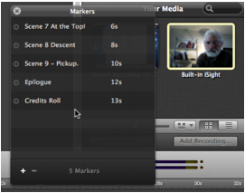

Jumping to a Marker To jump to a given marker, select: • Select Window > Markers ScreenFlow displays the marker list window, as shown here in Figure 34. Figure 34. Selecting a Marker From the Marker List  Click the arrow to the left of a marker to quickly move to that time in the project. • Control (right)-click in the time scale—select the marker that you want to jump to.